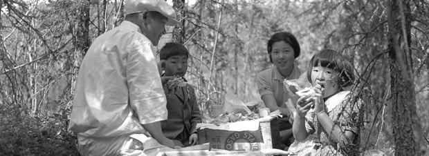

Mary et Aya Yamasaki, à Keno, v. 1920.
AY, collection Histoire des Asiatiques au Yukon, 2006/146 nº 11
En 1921, le Yukon ne comptait que 20 résidents asiatiques; en 1941, ils étaient 40. Lors de la Deuxième Guerre mondiale, les ressortissants du Japon vivant au Canada furent déclarés sujets d’un pays ennemi après l’attaque japonaise contre Pearl Harbor et obligés à s’inscrire au ministère de la Défense nationale. Au Yukon, ils durent faire de même à la GRC. En 1942, plus de 20 000 hommes, femmes et enfants de souche japonaise, dont 75 % étaient des citoyens canadiens, furent envoyés dans des camps d’internement à travers le pays. Selon les sources d’archives, aucun Japonais de Dawson ne fut interné, mais nul ne sait si d’autres personnes d’origine japonaise vivant dans d’autres communautés du Yukon subirent le même sort.
Avec le temps, les choses changèrent en mieux. En 1947, la Loi de l’immigration chinoise fut abrogée; à tous les effets, elle avait réduit à zéro l’immigration chinoise au Canada. Dans cette même année, le droit de vote fut concédé aux Sino-Canadiens et aux Indo-Canadiens. En 1948, ce fut le tour des Canadiens d’origine japonaise à recevoir le droit de vote. Avec la Loi sur l’immigration de 1967, les futurs citoyens canadiens commencèrent à être évalués en fonction de leurs compétences et de leurs capacités d’adaptation à la culture canadienne, pas de leurs origines ethniques.
Frank Yokabada devant le vieux bureau de Lou Titus, Treadwell Yukon Co., v. 1935.
AY, collection Histoire des Asiatiques au Yukon, 2006/146 nº 12

Mary Burian (née Yoshida) devant l’hôtel Chateau Mayo, au début du printemps, v. 1958. Mary arriva au Yukon en 1931 à l’âge de 13 ans.
AY, collection Histoire des Asiatiques au Yukon, 2006/146 nº 13

Le fils de Mary Burian, Harvey, se souvient qu’elle lui avait raconté que l’on avait obligé les résidents japonais de Mayo à porter une carte d’identité.
AY, collection Histoire des Asiatiques au Yukon, 2006/146 nº 17

Dawson Weekly News, le 16 janvier 1942, p.1

La grande expertise de Jim Quong en matière de ponts a été inestimable pour la réfection et la modernisation de la route de l’Alaska.
J. Quong, collection privée

Article écrit par Jim Robb pour son « Colourful Five Percent [Un pittoresque 5 p. 100], v.1, no.1, 1984, » p.6.
AY, Recueil 1984-70 grand format

Harry Yamasaki à l’entrée de son établissement, l’hôtel Galena, à Keno, 1926.
AY, fonds William Hare, 82/418 nº 6761
Située sur la rivière Stewart, la ville de Mayo s’est développée au début du 20e siècle après la découverte de l’or dans les ruisseaux Duncan, Minto et Highet. En 1919, on découvrit de riches gisements plombo-argentifères à Keno Hill et pendant presque 20 ans la région fut le pilier de l’économie du Yukon. Plusieurs familles japonaises vivaient dans le secteur. Bien que beaucoup d’immigrés asiatiques de première génération au Yukon – et dans le reste du Canada – fussent des hommes célibataires, dès les années 1920 pas mal de familles avaient élu domicile dans la région.
George Nagano et son fils George, la gardienne d’enfants Betty Kika avec la fille de George, Jean, lors d’un pique-nique de l’école du dimanche, Mayo, 1937.
AY, collection Histoire des Asiatiques au Yukon, 2006/146 nº 15